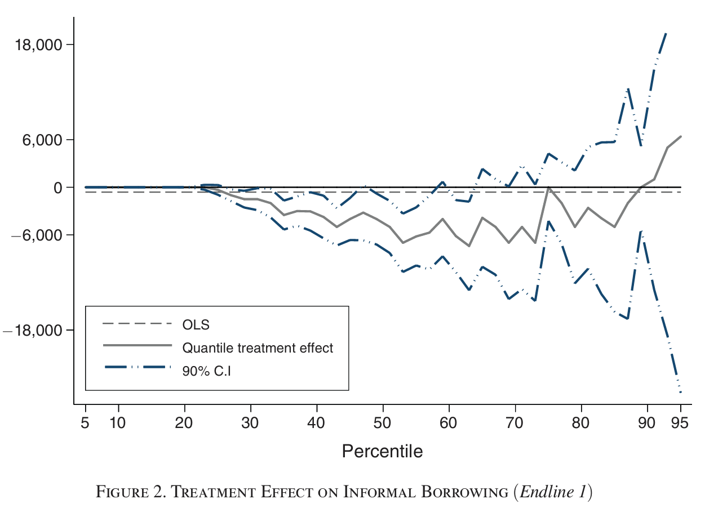

library(stargazer)
Please cite as: Hlavac, Marek (2022). stargazer: Well-Formatted Regression and Summary Statistics Tables. R package version 5.2.3. https://CRAN.R-project.org/package=stargazer Let \(W\) be a \(N × 1\) vector denoting the treatment assignment of each individual in the sample.
A fixed, pre-determined number of subjects is assigned to receive the treatment.
\[ \mathbf{Pr}(W|X,Y(0),Y(1))= \begin{cases} (\frac{N!}{N_t!(N-N_t)!})^{-1} & \text{if} \space\space \Sigma^N_{i=1} W_i = N_t\\ 0 & \text{otherwise} \end{cases} \]
In a completely randomized experiment, \[ e(X_i)=\frac{N_t}{N} \] i.e. equal for all units and independent of \(X_i\)
Stratification involves the dividing of the population into blocks or strata (\(B_i \in \{1,...,J\}\)), based on pre-treatment, observable characteristics \(X_i\): \(B_i = B_i(X_i)\)
This matches Angrist and Pischke’s definition of the Conditional Independence Assumption (MM and MHE; week 3)
The difference between means gives us, \[ \begin{aligned} E[Y_i|W_i=1] - E[Y_i|W_i=0]\\ =E[Y_i(1)|W_i=1]- E[Y_i(0)|W_i=0] \\ =\underbrace{E[Y_i(1)|W_i=1]-E[Y_i(0)|W_i=1]}_{\tau_{ATT}=E[Y_i(1)-Y_i(0)|W_i=1]} & + \underbrace{E[Y_i(0)|W_i=1]- E[Y_i(0)|W_i=0]}_{\text{Selection}} \end{aligned} \] What is the source of selection bias?
Unconfoundedness gives us \[ E\left[Y_i(0)|W_i=1\right]=E\left[Y_i(0)|W_i=0\right]=E\left[Y_i(0)\right] \] implying no selection in expectation
\[ \underbrace{E\left[Y_i(0)|W_i=1\right]-E\left[Y_i(0)|W_i=0\right]}_\text{Selection}=0 \] The observed difference the ATT. \[\begin{equation*} E\left[Y_i|W_i=1\right]-E\left[Y_i|W_i=0\right]=\tau_{att} \end{equation*}\] and \[\begin{equation*} \tau_{ATT}=\tau_{ATU}=\tau_{ATE} \end{equation*}\] Randomization makes the comparison of two samples ceteris paribus in expectation.
Example from Banerjee et al. (2015, p. 38) 2 
In Applied Economics, policy evaluations that embrace randomization are commonly referred to as Randomized Control Trials (RCTs).When evaluating finite samples, there are two potential null hypothesis: 1. Fisher’s sharp null hypothesis: \[ \begin{align*} &H_0: Y_i(1)=Y_i(0) \quad\forall i=1,...,N \\ \text{against }&H_1:\;\exists\;i\; \text{s.t.}\;Y_i(1)\neq Y_i(0) \end{align*} \] 2. Neyman’s (finite sample) average treatment effect (ATE) hypothesis: \[ \begin{align*} &H'_0: \frac{1}{N}\sum_{i=1}^{N}(Y_i(1)-Y_i(0))=0 \\ \text{against }&H'_1:\frac{1}{N}\sum_{i=1}^{N}(Y_i(1)-Y_i(0))\neq0 \end{align*} \]
Consider the test statistic, \[ T(W,Y^{obs}) = \bar{Y}^{obs}_t-\bar{Y}^{obs}_c \]
Since we know the assignment mechanism under randomization, we can consider other realizations of W, \[ T(\tilde{W},Y^{obs}) \] under the null hypothesis.Suppose we observe the data on outcomes \(Y^{obs}\) and treatment status \(W\),
| Y^{obs} | W |
|---|---|
| 3 | 1 |
| 6 | 0 |
| 9 | 1 |
| 4 | 1 |
| 5 | 0 |
| 2 | 0 |
Depending on treatment status, we either observe \(Y_i(0)\) or \(Y_i(1)\),
| \(Y^{obs}\) | \(W\) | \(Y(0)\) | \(Y(1)\) |
|---|---|---|---|
| 3 | 1 | - | 3 |
| 6 | 0 | 6 | - |
| 9 | 1 | - | 9 |
| 4 | 1 | - | 4 |
| 5 | 0 | 5 | - |
| 2 | 0 | 2 |
With this data we can compute any test-static \(T(W,Y^{obs})\). For example, the standard t-statistic (assuming unequal variances),
\[ T(W,Y^{obs}) = \frac{\hat{\tau}}{\hat{se}(\hat{\tau})} = \frac{\bar{Y}^{obs}_t-\bar{Y}^{obs}_c}{\sqrt{\frac{S^2_c}{N_c}+\frac{S^2_t}{N_t}}} \] Since the null hypothesis - \(H_0: Y_i(0)=Y_i(1) \quad\forall\; i=1,...,N\) - is sharp, we know,
| \(Y^{obs}\) | \(W\) | \(Y(0)\) | \(Y(1)\) |
|---|---|---|---|
| 3 | 1 | 3 | 3 |
| 6 | 0 | 6 | 6 |
| 9 | 1 | 9 | 9 |
| 4 | 1 | 4 | 4 |
| 5 | 0 | 5 | 5 |
| 2 | 0 | 2 | 2 |
under the null.
We can therefore construct other realizations of the treatment allocation: \(W'\).
| \(Y^{obs}\) | \(W\) | \(Y(0)\) | \(Y(1)\) | \(W'\) | \(Y^{obs'}\) |
|---|---|---|---|---|---|
| 3 | 1 | 3 | 3 | 0 | 3 |
| 6 | 0 | 6 | 6 | 1 | 6 |
| 9 | 1 | 9 | 9 | 1 | 9 |
| 4 | 1 | 4 | 4 | 0 | 4 |
| 5 | 0 | 5 | 5 | 0 | 5 |
| 2 | 0 | 2 | 2 | 1 | 2 |
\[ T(W',Y(1),Y(0)) \] Compute for all possible realizations of \(W\), get the exact distribution of the test static under the sharp null hypothesis.
\[ H_0:\;\tau^{fs}_{ATE} = 0 \qquad\text{against}\qquad H_0:\;\tau^{fs}_{ATE} \neq 0 \]
We can express,
\[ \tau^{fs}_{ATE} = \frac{1}{N}\sum_{i=1}^{N}(Y_i(1)-Y_i(0))=\bar{Y}(1)-\bar{Y}(0) \]
Then, \[ \hat{\tau} = \bar{Y}^{obs}_t-\bar{Y}^{obs}_c \]
Is an unbiased estimator for \(\tau^{fs}_{ATE}\).
Remember, with a fixed sample, the source of variation is \(W\).
But we also need to consider the correlation between \(W_i\) and \(W_{i'}\):
\[ S^2_c = \frac{1}{N-1}\sum_{i=1}^N (Y_i(0)-\bar{Y}(0))^2 \]
\[ S^2_t = \frac{1}{N-1}\sum_{i=1}^N (Y_i(1)-\bar{Y}(1))^2 \] **Note, the variance of \(Y(1)\) and \(Y(0)\) need not be the same. And, \[ \begin{align*} S^2_{ct} &= \frac{1}{N-1}\sum_{i=1}^N (Y_i(1)-Y_i(0)-(\bar{Y}(1)-\bar{Y}(0)))^2 \\ &=\frac{1}{N-1}\sum_{i=1}^N (Y_i(1)-Y_i(0)-\tau^{fs}_{ATE})^2 \end{align*} \]
Third term captures the sample variation in the unit-level TE.
If TE are constant (i.e. homogenous), then equals 0.
We have no way of estimating the \(S^2_{ct}\) since it requires observation of both \(Y_i(1)\) and \(Y_i(0)\) for the same unit.
where, \[
s^2_c = \frac{1}{N_c-1}\sum_{i:W_i=0}^N (Y_i^{obs}-\bar{Y}^{obs}_c)^2
\] \[
s^2_t = \frac{1}{N_t-1}\sum_{i:W_i=1}^N (Y_i^{obs}-\bar{Y}^{obs}_t)^2
\]
** Note, this is different to the T-test variance
library(stargazer)
Please cite as: Hlavac, Marek (2022). stargazer: Well-Formatted Regression and Summary Statistics Tables. R package version 5.2.3. https://CRAN.R-project.org/package=stargazer data1 <-data.frame(y0 = c(1,3,2,4),
y1 = c(3,1,3,3)
)
data1$tau <- data1$y1-data1$y0
data1$St <- c(sd(data1$y1)^2,sd(data1$y0)^2,sd(data1$tau)^2,NA)
print(paste("Finite Sample Variance Tau-hat:", data1$St[1]/2+data1$St[2]/2-data1$St[3]/4))[1] "Finite Sample Variance Tau-hat: 0.5"Code out all the possible realizations of W
m <- 1
for (i in 1:3){
j <- i + 1
while (j <= 4) {
data1[paste0("w", m)] <- as.numeric((1:nrow(data1) == i) | (1:nrow(data1) == j))
m <- m + 1
j <- j + 1
}
}
tauhat <- matrix(NA, nrow = 6, ncol = 1)
for (i in 1:6) {
data1[paste0("yobs", i)] <- data1$y1 * data1[paste0("w", i)] + data1$y0 * (1 - data1[paste0("w", i)])
model <- lm(paste0("yobs", i, " ~ ", "w", i), data = data1)
tauhat[i, 1] <- coef(model)[paste0("w", i)]
}
print(paste0("Finite Sample Variance Tau-hat is ", sd(tauhat)^2*5/6))[1] "Finite Sample Variance Tau-hat is 0.5"First used in Rubin, D.B. (1990) ‘Formal Mode of Statistical Inference for Causal Effects’ Journal of Statistical Planning and Inference, 25(3), pp. 279-292↩︎
Banerjee, A., Duflo, E., Glennerster, R. & Kinnan, C. 2015, “The Miracle of Microfinance? Evidence from a Randomized Evaluation”, American economic journal. Applied economics, vol. 7, no. 1, pp. 22-53. ### Randomization in practice↩︎